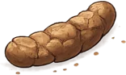
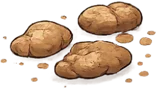
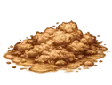
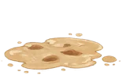

What do Bristol stool types 1 to 7 mean?
The Bristol Stool Form Scale describes what a bowel movement looks like. Type 1 is hard and pellet-like. Type 4 is smooth and formed. Type 7 is entirely liquid. The numbers describe shape and consistency.
The seven stool types
- Type 1
Small, firm pellets that stay separate.

Type 2One formed piece with obvious lumps along its length.
- Type 3
One formed piece with cracks visible on its surface.
- Type 4
One soft, smooth, elongated piece.

Type 5Individual soft pieces with clearly defined edges.

Type 6Loose, mushy fragments with uneven edges.

Type 7Liquid stool with no formed pieces.
How do I tell type 3 from type 4?
Look at the surface. Both can come out as one piece. Visible cracks point toward type 3. A smooth surface fits type 4.
What’s the difference between type 5 and type 6?
Look at the edges. If you can pick out separate soft pieces with clear outlines, type 5 is the closer description. When the edges look ragged and the pieces blend into a mushy mass, type 6 is closer.
What if a bowel movement has two different shapes?
Write what you saw. For example, “started as firm pellets, then passed a softer formed piece.” If your diary asks for one number, select the closest overall description and keep the extra detail in the note. A written description is also useful if you’re unsure which illustration fits.
See how to record a visit · Print a blank diary
References: Lewis and Heaton’s original stool form study and the Royal Berkshire NHS chart, page 9 (PDF). Illustrations are from Poopy.